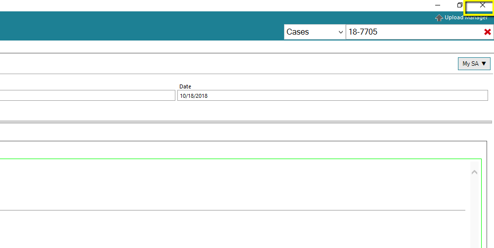
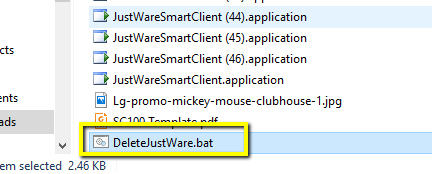
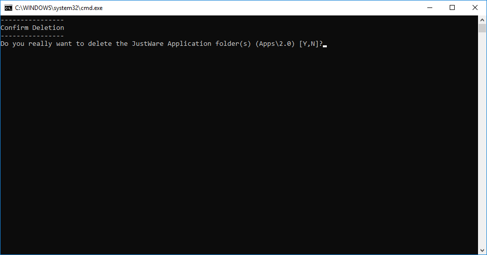
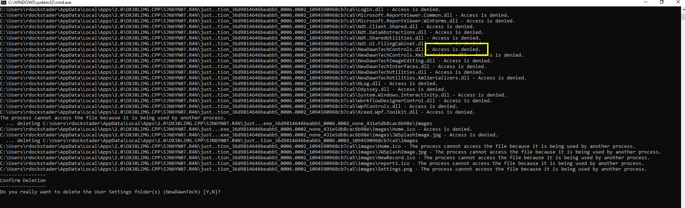
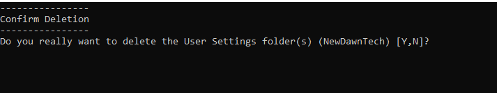

How to use the batch file to remove the local appdata cache
Download this batch file
DownloadClose all instances of JustWare that are open
Run the batch file
If you get a prompt, select more info and then run anyway
Press Y on the do you want to delete apps/2.0 folder
If you don't have access to the files (I.E. you need admin access, or you currently have justware open) you'll get errors like this
If you don't get any errors, hit Y on the next prompt
You should now be able to relaunch justware, and have it re-install.